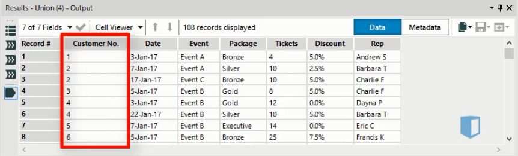
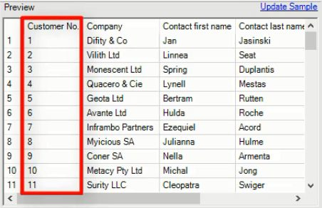
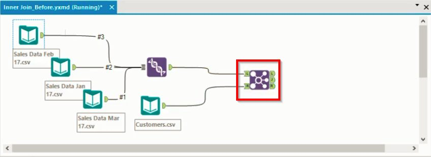
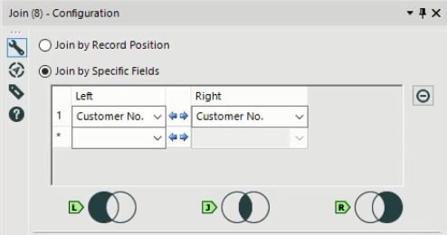

Joining tables together is a common task in Alteryx. In this post, we’ll discuss how to combine tables horizontally using the Join tool. The Join tool is used to combine tables which are linked by a common field. It is slightly more complex than the Union tool that we saw in a previous post, but is not difficult to understand once you grasp the principle of how it works.
The Join tool
The Join tool is used to combine tables horizontally. It is used when you have two tables that contain different pieces of information but are linked by a common field. Using the join tool makes your data wider, adding more information to your existing records. Joining is used when you want to merge or blend two tables together to create a single wide table.
Join tool example
Let’s look at an example of joining in Alteryx. Below is a sales dataset which shows sales of corporate event packages. Note that one of the columns is called Customer Number. This column indicates the customer that this particular sale was made to.

Separately, the business has a file containing information on the customers, which we can see below. Again, we have highlighted the Customer Number column. We’re going to use the Join tool to combine these two tables into one. We’ll use the Customer Number as the common field to merge the two tables.

The join tool is found on the join tab. When we bring it onto the canvas, we get the workflow shown below, where the join tool is highlighted. Note that our sales data is made up of three files which we combined previously using a Union tool.

The join tool has exactly two inputs. One connects to the L input node and is considered the left input, the other connects to the R input node and is considered the right input.
Join Details
Before we run the workflow, we’ll want to configure the tool by specifying the fields used in the join. Below we see the configuration window for this particular join.

As we saw earlier, the field common to both tables is Customer Number, so we specify that as the field to join by from both the left and right input tables. Now the two tables will be merged using the Customer Number field.
Join Output
Once the join tool is set up, we can run the workflow to execute the join. The join tool produces three different outputs, which we’ll discuss now.
Looking at the workflow above, we can see that the join tool has three output nodes: L, J and R, each of which contains a data set. Each of the data sets contains all the columns from both of the input tables. What varies between each node is which rows from the input tables are included. The configuration window above graphically illustrates what these three outputs contain.
- The J output node contains data found in both input tables. This is also known as an inner join. In this example, the dataset at this node contains customer numbers that are found in both the sales table and the customer table.
- The R output node contains data that is found only in the Right input table. In our example, this contains customers found in the customers table but not in the sales table. These would generally be previous customers who have not made a purchase during the length of the sales data.
- The L output node contains data that is only found in the Left input table. In our example, this would be customers found in the sales table but not in the customer table. This could happen with very new customers who the company sold to recently, but who have not yet been recorded in the customer database.
Discussion
The Join tool can be a useful tool when merging tables horizontally in Alteryx. It takes exactly two inputs, and produces three outputs, that are actually quite easy to understand. You can join using one common field, as we saw here, or using multiple common fields, if you need to.
It can also be useful as a filtering tool. Focusing on the inner join output allows you to filter out any records which have incomplete data.